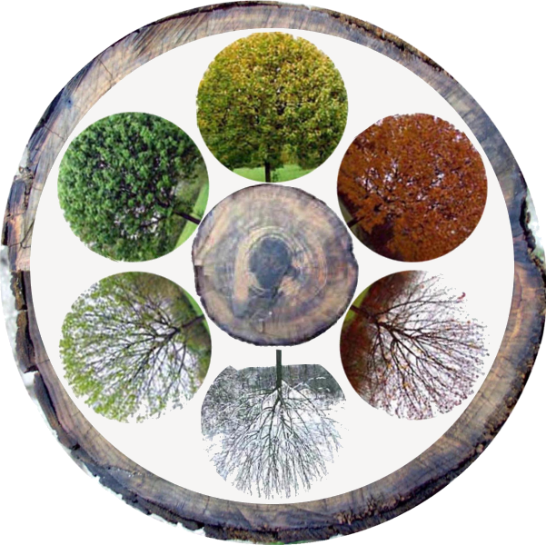

Ecological Season
- Prevernal (early or pre-spring): Begins February or late January (mild temperate), March (cool temperate). Deciduous tree buds begin to swell. Migrating birds fly from winter to summer habitats.
- Vernal (spring): Begins March (mild temperate), April (cool temperate). Tree buds burst into leaves. Birds establish territories and begin mating and nesting.
- Estival (high summer): Begins June in most temperate climates. Trees in full leaf. Birds hatch and raise offspring.
- Serotinal (late summer): Generally begins mid to late August. Deciduous leaves begin to change color. Young birds reach maturity and join other adult birds preparing for fall migration.
- Autumnal (fall): Generally begins mid to late September. Tree leaves in full color then turn brown and fall to the ground. Birds migrate back to wintering areas.
- Hibernal (winter): Begins December (mild temperate), November (cool temperate). Deciduous trees are bare and fallen leaves begin to decay. Migrating birds settled in winter habitats.